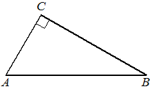

Авторский разбор и аудит предварительны; внешней экспертизы нет.
Технически завершена: True; в основных частотах: True ·
Впишите правильный ответ.
| В треугольнике угол равен , , . Найдите . |  |
КЭС: 7.1 Фигуры на плоскости
0,6
| ID / вход | Действие | Результат | Локальные KC |
|---|---|---|---|
| s1 · condition | Найти второй катет прямоугольного треугольника по теореме Пифагора. | Так как угол C равен 90°, AB — гипотенуза. AC = sqrt(AB² − BC²) = sqrt(25 − 16) = 3; выбран положительный корень, поскольку AC — длина стороны. | kc1 |
| s2 · condition, s1 | Вычислить косинус острого угла как отношение прилежащего катета к гипотенузе. | cos A = AC/AB = 3/5 = 0,6. | kc2 |
[
{
"id": "m1",
"name": "Нахождение прилежащего катета по теореме Пифагора и применение определения косинуса",
"step_ids": [
"s1",
"s2"
]
}
]В прямоугольном треугольнике по известным длинам гипотенузы и одного катета вычислить другой катет как положительный квадратный корень из разности их квадратов; гипотенуза должна быть длиннее известного катета.
{
"local_kc_id": "kc1",
"status": "match",
"catalog_kc_id": "pythagoras",
"evidence": [
{
"ref": "step:s1:result",
"quote": "Так как угол C равен 90°, AB — гипотенуза. AC = sqrt(AB² − BC²) = sqrt(25 − 16) = 3; выбран положительный корень, поскольку AC — длина стороны."
}
],
"context_refs": [
"condition"
],
"alternatives_checked": [
{
"catalog_kc_id": "cosine_law",
"reason": "В шаге используется прямой угол и разность квадратов сторон, а не связь сторон с косинусом произвольного угла по теореме косинусов."
},
{
"catalog_kc_id": "literal_57e72251d4a8",
"reason": "Это алгебраическое нахождение обоих корней x²=c; кандидат описывает геометрическое восстановление длины с положительным корнем, прямо включённое в pythagoras."
}
],
"rationale": "Прямой угол задан условием и указан в результате; AB верно распознана как гипотенуза. По AB=5 и BC=4 вычислен катет AC=3 с явным выбором положительной длины. Это полное применение определения pythagoras, включая его существенные предпосылки и результат.",
"proposal": null,
"blocking": false,
"issue_ids": []
}По длинам гипотенузы и катета, прилежащего к заданному острому углу прямоугольного треугольника, вычислить косинус как отношение этого катета к гипотенузе.
{
"local_kc_id": "kc2",
"status": "match",
"catalog_kc_id": "literal_be5764a81415",
"evidence": [
{
"ref": "step:s2:action",
"quote": "Вычислить косинус острого угла как отношение прилежащего катета к гипотенузе."
},
{
"ref": "step:s2:result",
"quote": "cos A = AC/AB = 3/5 = 0,6."
}
],
"context_refs": [
"condition",
"step:s1:result"
],
"alternatives_checked": [
{
"catalog_kc_id": "literal_38dfd2a1aa18",
"reason": "Требует известный острый угол и вычисление стороны; здесь численное значение угла неизвестно и вычисляется его косинус по сторонам."
},
{
"catalog_kc_id": "literal_db53e3ae2119",
"reason": "Использует известный угол для нахождения стороны; здесь действие направлено от длин сторон к тригонометрическому отношению."
},
{
"catalog_kc_id": "literal_79a8fac1b83f",
"reason": "Предполагает известную гипотенузу и угол для вычисления сторон, а не вычисление косинуса по двум сторонам."
},
{
"catalog_kc_id": "literal_6308771d01a6",
"reason": "Подстановка аргумента в формулу функции не описывает геометрический выбор прилежащего катета и гипотенузы относительно A."
}
],
"rationale": "В прямоугольном ABC относительно угла A выбран прилежащий катет AC и гипотенуза AB, затем их отношение вычислено как 0,6. Значение AC поступает из s1, а AB и прямой угол — из условия. Определение literal_be5764a81415 полностью реализовано выбором соответствующих сторон; численное деление составляет естественное завершение того же действия и не требует отдельного KC.",
"proposal": null,
"blocking": false,
"issue_ids": []
}[]
[]
{
"source_path": "data/fipi/2026-10-31-profile/tasks/847B0B.json",
"technical_errors": [],
"author_path": "raw\\author\\847B0B.json",
"auditor_path": "raw\\auditor\\847B0B.json"
}